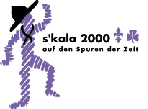
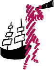
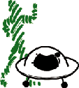
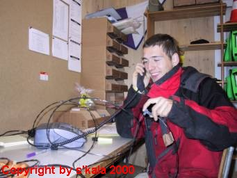
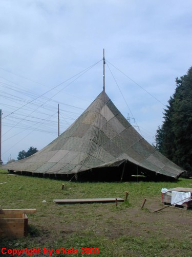
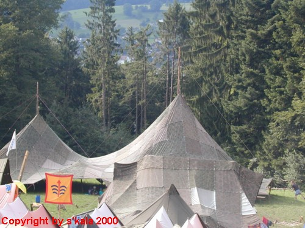

Fürs diesjährige Sommerlager der Pfadi Alvier Buchs stand etwas ganz Besonderes auf dem Programm: Das Kantonallager ("S'Kala") 2000. Zusammen mit über 1500 anderen Pfadfindern und Pfadfinderinnen erlebten die Buchser erlebnisreiche und einzigartige Tage in Eschenbach (SG). Nach dem Motto "auf den Spuren der Zeit" entstanden dort verschiedene Zeltdörfer,
wovon jedes eine andere Zeitepoche darstellte: Urzeit, Antike, Mittelalter, Neuzeit, Gegenwart und Zukunft. Die Buchser Pfadis schlugen ihre Zelte auf Plattformen in der Zukunft auf, zusammen mit verschiedenen Pfadiabteilungen aus der Umgebung, aber auch mit Gästen aus Luxembourg.
Blachenbauten, besichtigten den Zürcher Zoo, tobten sich im Wasser aus, erkundeten das umliegende Gebiet oder trugen Geländespiele aus. Weitere Höhepunkte des Lagerprogramms waren auch die sogenannten "Actions": Verschiedenste Angebote standen zur Verfügung und die Pfadis konnten im gesamten Lager ihr Zettelchen so lange tauschen, bis sie genau "ihr" Action errungen hatten. An vier Halbtagen erlebten die Teilnehmer dann so unterschiedliche Dinge wie Flossbauen, Steinbruchbesichtigung, Klettern, Kanufahren, Stühlebauen, Taschenbasteln, Brotbacken, Papierschöpfen und, und, und...PANDA